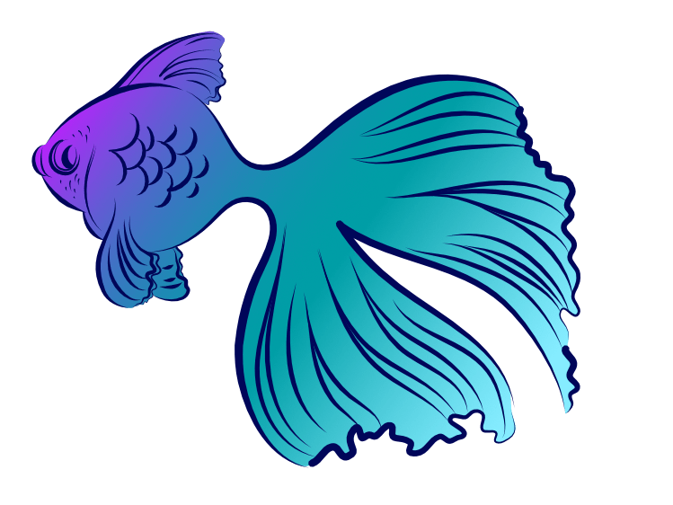

Pencil Tool
Pencil Tool
With the Pencil Tool you can create a hand-drawn look by drawing freehand, variable width, lines as if you were drawing on paper.
With the Pencil Tool you can create a hand-drawn look by drawing freehand, variable width, lines as if you were drawing on paper.

As you draw, nodes are created automatically along the stroke which can optionally be smoothed as you draw by enabling the Stabiliser feature. A Sculpt mode also lets you reform or continue your pencil stroke at any time, although you can use the Node Tool to edit too. When using a combination of sculpting and Use Fill, you can form conjoined pencil strokes that can take a fill with the stroke's concave area.
Its variable width lines can be controlled either by velocity—most useful when drawing with a mouse—or by pressure—for use when drawing with a pressure sensitive pen tablet.
Line styles are applied using the Stroke panel. For brush textures, pick a brush from the Brushes panel.
The following settings can be adjusted from the context toolbar: